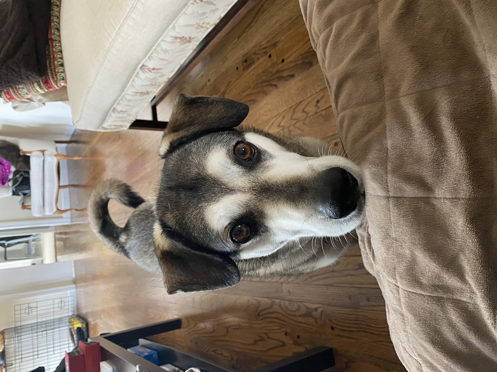
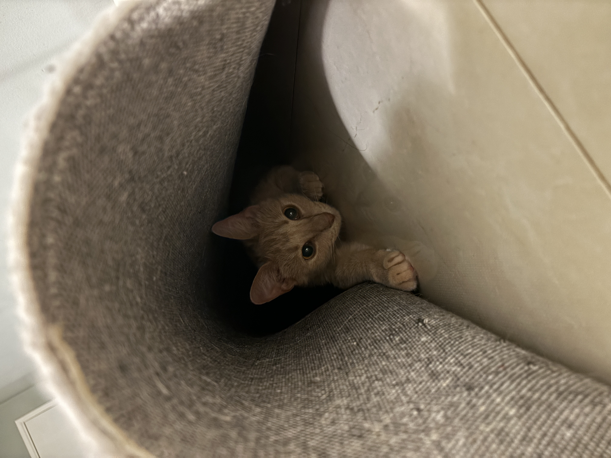

PetaBread's College Cookbook
[ About Me ]
Hello, I'm Peter! I got the nickname PetaBread from some friends back in middle school and it has stuck ever since. I grew up in Markham, Ontario, and moved to Michigan in 3rd grade. Some hobbies of mine are archery, video games, cooking, and fitness. Hope you like this website!

